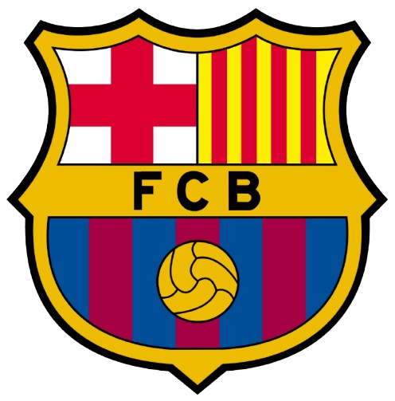

Barcelona

Sejarah FC Barcelona, yang dikenal juga sebagai Barça, merupakan salah satu cerita yang penuh dengan prestasi, tantangan, dan kebanggaan. Berikut adalah gambaran singkat mengenai sejarah klub sepak bola ini
- Pendirian (1899): FC Barcelona didirikan pada 29 November 1899 oleh sekelompok imigran Swiss, Catalan, Jerman, dan Inggris yang dipimpin oleh Joan Gamper. Klub ini awalnya bernama Foot-Ball Club Barcelona dan bertujuan untuk memperkenalkan olahraga sepak bola ke wilayah Catalunya, Spanyol. Sejak awal, klub ini memiliki semangat untuk mewakili identitas dan kebanggaan wilayah Catalunya, yang terlihat dari motto klub "Més que un club" (Lebih dari sekadar klub).
- Awal Karier dan Kesuksesan Awal (1900-an): Pada awal abad ke-20, Barcelona mulai meraih kesuksesan di berbagai kompetisi lokal dan internasional. Klub ini pertama kali memenangkan Campionat de Catalunya pada tahun 1901. Di tahun-tahun berikutnya, Barcelona mulai berkembang, tidak hanya di dalam lapangan tetapi juga di luar lapangan, dengan memiliki lebih banyak penggemar yang loyal.
- Periode Perang dan Regime Franco (1930-1970-an): Pada periode Perang Saudara Spanyol (1936-1939) dan pemerintahan diktator Francisco Franco, FC Barcelona mengalami tekanan besar. Pemerintahan Franco berusaha untuk menekan identitas Catalan, termasuk larangan penggunaan bahasa Catalan, dan bahkan mencoba mengganti nama klub. Namun, FC Barcelona tetap menjadi simbol perlawanan terhadap rezim ini, dan meskipun banyak tantangan, klub terus berkembang dan memperoleh pengakuan internasional.
| Leo Messi |
: |
400 Goal |
| Luis Suarez |
: |
250 Goal |